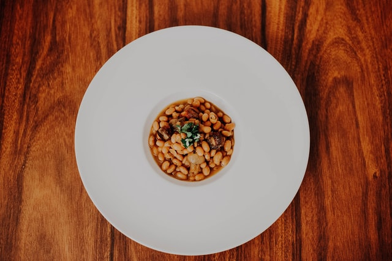

White Beans and Bacon

RKK Hearty White Beans and Bacon
One of the earliest staples of our menu, this deliciously smokey dish is sure to make you ask for seconds. Try this easy to make-at-home version today!
Ingredients
- 4 pieces bacon, roughly chopped
- 1 small onion, chopped
- 1 head curly endive, leaves rinsed and torn
- 2 large garlic cloves, chopped
- 2 cups white beans
Steps
- Cook bacon over medium to high heat in a large saucepan until crisp.
- Remove bacon from pan and set on paper towel to drain.
- Add onion to drippings, and saute till tender.
- Add half the endive leaves and cover pot, cooking till endive is wilted.
- Add remaining endive and garlic, cover and cooked till endive is wilted.
- Add beans and bacon, cooking until the beans are heated through, stirring often.
- Season with salt and pepper and serve.